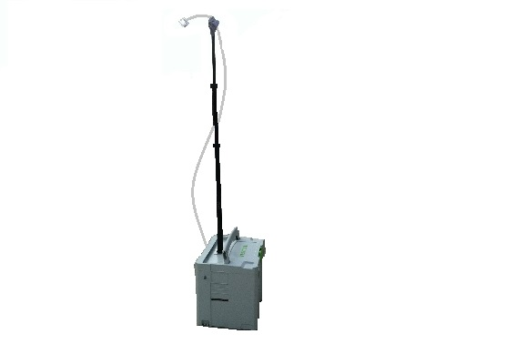
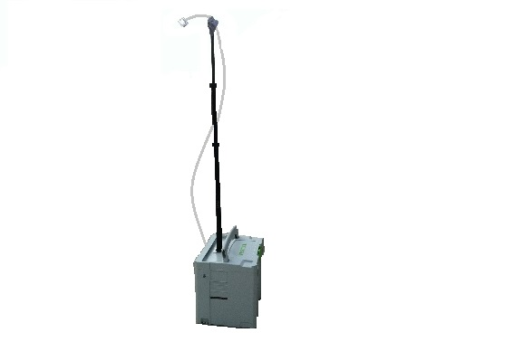
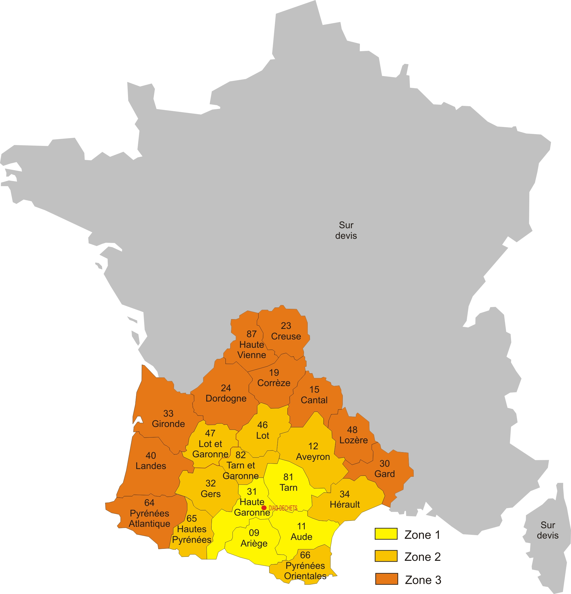
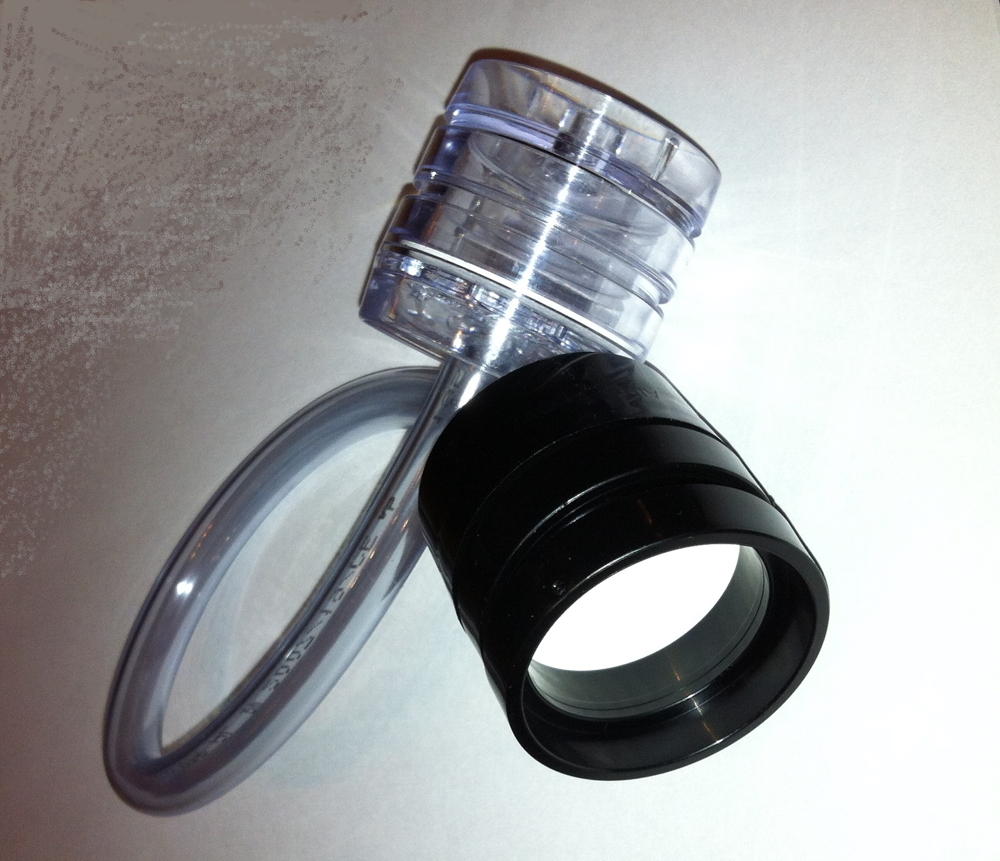
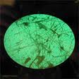

>Prélèvement d'air en vue de déterminer le niveau d'empoussièrement en fibres d'amiante.
Nous vous proposons des stratégies et des prélèvements d'air , selon les normes NF EN ISO 16000-7, NF X 43-050 et XP X 43-269 réalisés par un laboratoire accrédité.
Sur le grand Sud-Ouest, Diag-Déchets commercialise les prestations d'un laboratoire accrédité qui localement a mis à disposition : 10 pompes autonomes fixes, 4 sur secteur fixes et 2 pompes opérateur mobiles, sous la responsabilité d'un de leur technicien. Il assure avec réactivité vos prélèvements d'air en toute indépendance et adaptés à vos besoins. Le responsable stratégie du laboratoire accrédité, après visite et fourniture des documents nécessaires réalise une stratégie de prélèvement pour chacun de vos chantiers.
Zone d'intervention :

L'objectif des prélèvements d'air :
- Connaître précisément les risques pour les occupants dans le cas de matériaux contenant de l'amiante classés niveau 2.
- vérifier que le désamiantage est correctement exécuté et qu'il n'y a pas de contamination extérieure.
- s'assurer que les protections des travailleurs sont adaptées.

La pompe de prélèvement aspire l'air à travers une cassette. Les fibres d'amiante sont piégées sur la membrane filtrante. La cassette est envoyée chez le laboratoire accrédité pour comptage.

Comptage des fibres d'amiante, à l'aide d'une grille, après traitement de la membrane filtrante.